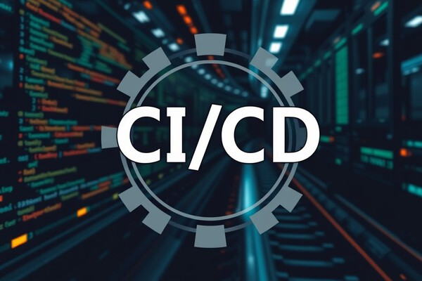
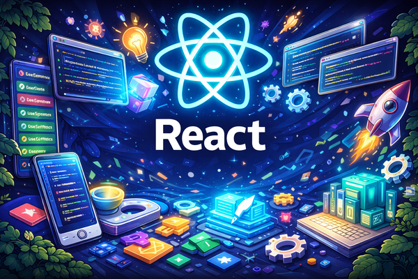
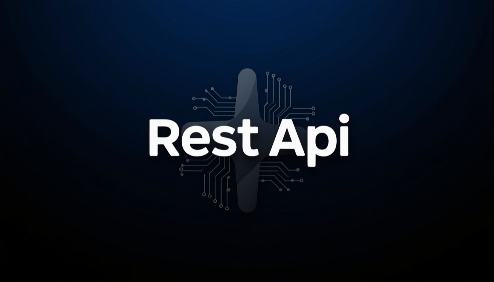
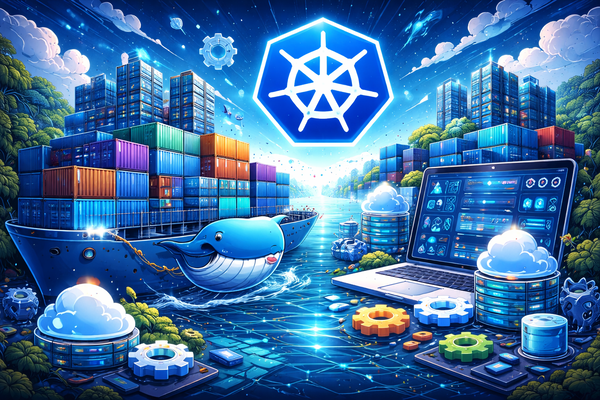

DevOps
Статьи о разработке, технологиях и не только

Настраиваем непрерывную интеграцию и доставку. GitHub Actions, GitLab CI, тестирование и деплой.
Читать далее
Разбираем все важные обновления React: Server Components, улучшения хуков, новые возможности оптимизации производительности и что это значит для разработчиков.
Читать далее
Руководство по созданию масштабируемых и безопасных REST API. Аутентификация, валидация, документация и тестирование.
Читать далее
Пошаговое руководство по контейнеризации приложений и оркестрации с помощью Kubernetes. Развёртывание, мониторинг, масштабирование.
Читать далееДоступ к серверу, SSH и некторорые базовые команды Linux
Читать далееЧто такое ИИ-агенты и зачем они бизнесу, какие задачи решают, как помогают, процессы внедрения.
Читать далееОсновы Next.js: типы, интерфейсы. Как начать использовать в проекте и избежать распространённых ошибок.
Читать далееСравниваем реляционные и документоориентированные базы данных. Плюсы, минусы и реальные сценарии использования каждой.
Читать далееПредложите тему или станьте гостевым автором